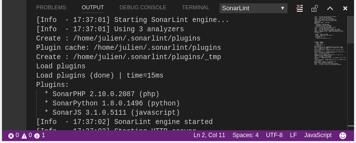

SonarLint offers a fully-integrated user experience in Visual Studio Code. After installing the extension issues will be reported as Visual Studio Code problems.
SonarLint is free, open source, and available in the Visual Studio Code Marketplace. Note that it requires a JRE 8 to run.

News
- July 3, 2017 - Today we released version 1.1.0 of SonarLint for Visual Studio Code. Updated SonarJS and rule descriptions displayed directly inside VSCode.
- June 10, 2017 - Today we released version 1.0.0 of SonarLint for Visual Studio Code. JavaScript, PHP and Python are supported.
Frequently Asked Questions
-
Which languages are supported?
JavaScript, PHP and Python are currently supported.
-
How to start SonarLint analysis?
SonarLint analysis is automatically triggered when you type code and also when you open a file.
-
How to see rule description?
You can open the SonarLint rule description panel using the context menu in the issues view:

-
How to see the SonarLint console?
The SonarLint console allow to see logs of the analysis. This can be useful to understand some technical issues. You can open it from the standard Visual Studio Code output panel: 
-
Is connected mode supported?
Not yet. Please follow and vote for https://jira.sonarsource.com/browse/SLVSCODE-14
Contribute
SonarLint for Visual Studio Code is open source under the LGPL v3 license. You can fork us on GitHub, and submit Pull Requests. Feel free to fix bugs or to implement new features.
Feedback
The preferred way to discuss about SonarLint is by posting on the SonarLint Google Group. We are also constantly monitoring questions posted to StackOverflow. For faster answers mark your StackOverflow questions with [SonarLint] and [VSCode] tags.